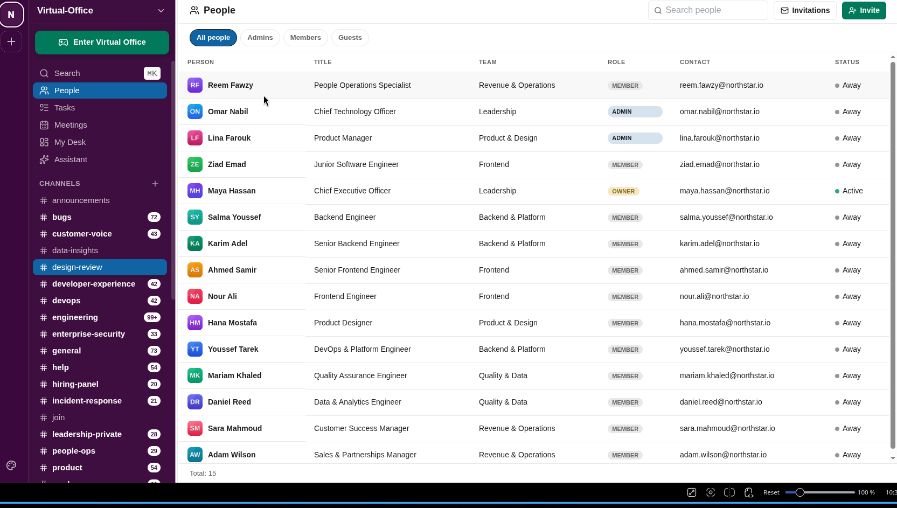
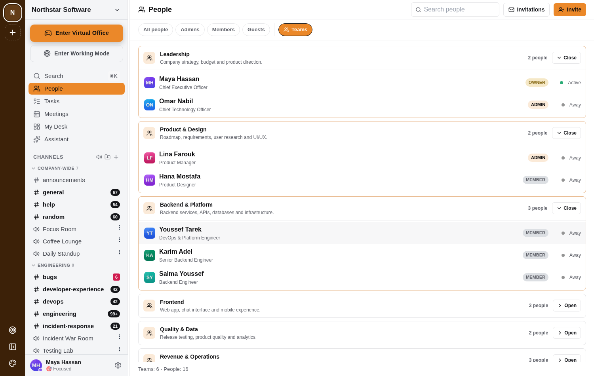

Features / People, and the teams they're on
People, and the teams they're on
WebA searchable directory of everyone in the workspace — filter by role, invite new people, and see who's actually active right now.

Switch to Teams to see the same people grouped by who they actually work with — expand a team to see its members without leaving the page.
